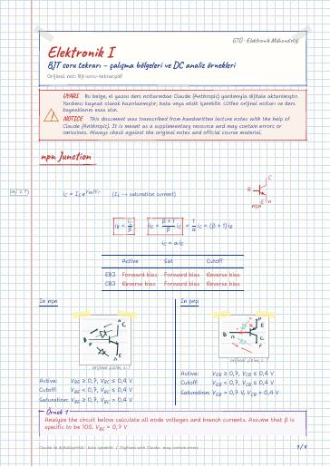

Electronics I · Digital lecture note
BJT problem review – operating regions and DC analysis examples
Elektronik I – BJT soru tekrarı – çalışma bölgeleri ve DC analiz örnekleri
- Course
- Electronics I
- Semester
- Semester 4 · Spring 2022–23
- Format
- PDF · 4 pages · 0.1 MB · handwriting-style LaTeX
- Language
- Turkish
- Original note
- Bjt-soru-tekrar.pdf
Open the PDF (0.1 MB)LaTeX source (.tex)Original handwritten note

Notice: The digital notes were created from the handwritten notes with the help of Claude (Anthropic); they are meant as a supplementary resource and may contain errors. Always rely on the original notes and the official course materials.
What is in this note?
Section headings of the note (in Turkish):
- npn Junction